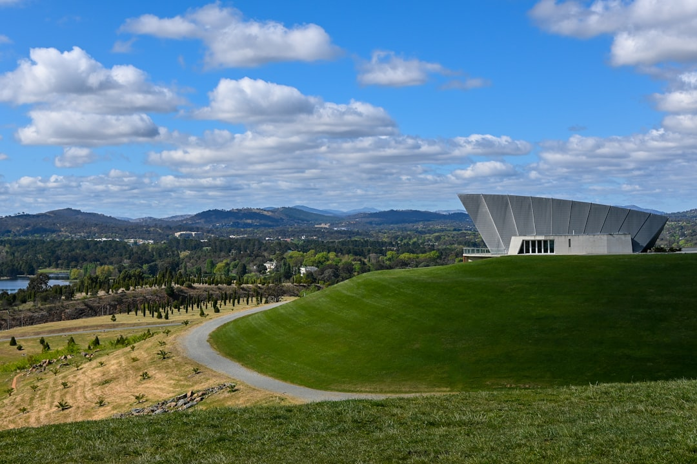

For owners comparing retaining wall canberra options, the useful first move is to document the site conditions that shape design, drainage, access and approval questions before materials are discussed.
Retaining Wall Canberra Explained
Retaining Wall Canberra frames the job from the ground up, not from the visible wall face. Its guide says retained height, cut and fill, nearby loads, water paths, boundaries and the route from the street should be noted before material selection. That sequence keeps an early discussion tied to measured conditions instead of preferences about finish.
Begin with one wide photograph from each end. Then record the maximum retained height and the broader change in ground level. After the overall geometry is visible, add close views of lean, cracking, decay, washout or persistent wetness. The guide also draws a line between what is seen and what is still unknown, stating that a wet patch is evidence while its source remains a question.
- Record the highest retained point, not just the most visible face.
- Photograph what sits near the crest, including driveways, buildings, fences, trees, pools and other walls.
- Trace where water appears to move through or over the soil.
Use the six point site ledger in every enquiry
The site ledger reduces a workable written enquiry to six observations, grade, loads, water, access, boundaries and approval path. That is more useful than asking which wall type is best, because each of those facts can alter the likely scope before anyone settles on a system.
Access deserves its own notes. The guide tells owners to measure gates, turns, steps, overhead limits and the distance from the street. Those details can affect handling, excavation planning and spoil movement. Boundary notes should be just as specific. Confirm the surveyed line, neighbouring levels, fences and any shared structures, rather than assuming a fence line tells the full story.
For a companion overview that compares system options, see this guide to retaining wall systems in Canberra.
Keep building approval and development approval separate
The guide is explicit that building approval and development approval are separate checks. It says the two pathways use different tests, and that an exemption under one pathway does not establish an exemption under the other. For owners, that means the site record should keep height, cut and fill, boundary position and nearby structures clear enough to support both questions if approval becomes relevant.
A written scope should be just as traceable. The guide says it should name the system, design roles and excavation. It should also cover spoil, drainage, outlet work, inspections and restoration. If any item is provisional, the condition that could change the method or programme should be identified in writing.
- Ask who is responsible for design and certification if the wall falls outside simple exemptions.
- Ask whether drainage and outlet work are described as part of the scope or left for later confirmation.
- Ask which unknown site condition could change the method after excavation starts.
Choose among the eight pathways by site conditions
The published guide lists eight pathways, concrete sleeper walls, segmental block and masonry walls, sandstone and natural stone walls, timber sleeper and garden walls, gabion walls, drainage and excavation coordination, engineered approval ready walls, and repairs or replacement. The useful reading is not that each option suits a style preference, but that each one is tied to geometry, loads, footprint, access and drainage.
Concrete sleeper work is described as one scope where embedment, handling access, transitions, loads and drainage are designed together. Segmental and reinforced masonry options are assessed against wall geometry, footing or reinforced soil requirements, available footprint and finish. Stone may offer a durable gravity solution where the site has sound bearing, enough footprint and safe machinery access. Timber is narrowed to appropriate lower terraces, with moisture exposure, fixings, drainage and future replacement needs still in view.
Where an existing wall is already moving or deteriorating, the guide shifts the discussion to cause led assessment of movement, decay, washout and cracking, followed by a repair, stabilisation or replacement scope.
Local prompts that actually change the brief
The local value here comes from the kinds of blocks the guide names, not from a generic suburb list. It says Canberra sites range from established inner south gardens to recent Molonglo cut and fill blocks. In both settings, the wall interacts with land above it, nearby building or driveway load, the boundary, and water moving through or over the soil.
The location prompts are most useful when they match the character of the property. Red Hill is framed around ridge edge and established garden conditions. Deakin is described in terms of established homes and blocks where access protection, existing walls, trees and service routes can shape excavation planning. Forrest is presented as a mature inner south setting where formal landscapes, boundary detail and protection of established paths and gardens deserve early documentation.
If your site has a similar mix of mature planting, tight access, existing structures or visible cut and fill, put those facts into the first written brief. They are more useful than a material preference when the aim is to compare methods on the same site basis.
- Photograph the setting. Take one wide image from each end before adding close photos of cracks, lean, decay, washout or wet areas.
- Measure the geometry. Note the maximum retained height and how the wall sits within the broader cut and fill relationship.
- Map nearby loads. Record driveways, buildings, fences, trees, pools and other walls near the crest because nearby loads can change the brief.
- Note access and boundaries. Measure gates, turns, steps, overhead limits and the distance from the street, then confirm surveyed lines and neighbouring levels.
- Ask for a written scope. Request the system, design roles, excavation, spoil, drainage, outlet work, inspections and restoration in writing.
| Situation | What to record first | Why it changes scope |
|---|---|---|
| New wall on changing ground | Maximum retained height, broader cut and fill, access route, nearby loads and water paths | These details shape system selection, excavation planning and drainage coordination |
| Existing wall with visible movement | Wide site photos, lean or cracking, wet areas, nearby structures and boundary context | Repair, stabilisation or replacement depends on cause led assessment, not face appearance alone |
This guide covers how to document site conditions, compare wall pathways and separate approval questions for a Canberra wall project.